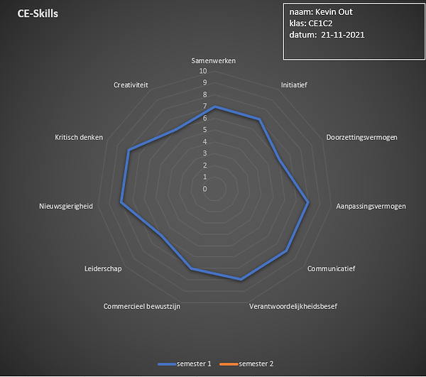

Belbin Teamrollen
Aanleiding en zelfstandigheid
In het begin van blok 1 had ik een poster gemaakt waar ik een aantal kwaliteiten en zwaktes op had gezet. Terugkijkend op blok 1 heb ik de belangrijkste hiervan kunnen identificeren. Dit zijn de kwaliteiten en zwaktes waarvan ik denk die het het meest “mij” maken. Het eerste waarvan ik eigenlijk al wist dat dit hier zou komen was zelfstandigheid. Ik werk graag alleen en zo heb ik dit ook gemerkt tijdens het project. Ik kan me het best concentreren alleen, in een donkere kamer, voor mijn PC en met muziek op. Dit is hoe ik eigenlijk altijd te werk ga zowel voor school als in mijn vrije tijd. Al betekent dit dat ik goed alleen kan werken maar ook dat ik wat tekortkomingen heb op het gebied van teamwork.
Een grote zwakte
Daarentegen is lui zijn een zwakte die ik veel heb zien terug komen. Of het nou om school werk gaat of dingen daarbuiten ik heb een passie voor uitstellen. Zo maak ik dit ook op de laatste dag -_-. Dit is een slechte gewoonte die mij in de problemen helpt met deadlines maar ik ook sneller achterloop op de stof. Dit is misschien wel het punt wat het meest bij me voorkomt. Gedurende een normale week ben ik of dingen aan het uitstellen of ik ben het gene wat ik eerder had uitgesteld last-minute aan het maken. Wel is hier een vooruitgang in te zien en werk ik eraan om hiervan af te komen.
Integriteit
Integriteit staat bij mij ook hoog op mijn lijstje van kwaliteiten die ik belangrijk vind. Ik denk vaak na over wat ik doe of zeg en sta er dan ook bij. Ik hecht veel aan eerlijkheid en dit reflecteert in de mensen waarmee ik omga. Als ik een punt opbreng dan sta ik hier ook voor zo heeft dit in mijn profielwerkstuk groep gezorgd voor een betrouwbare indruk nadat ik sterk bij mijn idee over het project bleef.
Growth mindset
Iets wat ik terug zie van een growth mindset bij mij is hoe competitief ik ben en hoe ik daarmee omga. Ik ben vrij competitief, dit is iets wat ik merkte tijdens het gamen waar ik eigenlijk altijd wel de beste wilde zijn en constant beter worden om betere resultaten neer te kunnen zetten. Het meest zeggende is hoe ik met de competitie omga, ik sta in gebieden die me interesseren altijd open voor een uitdaging en heb veel respect voor mensen die iets beter kunnen dan ik. Iemand die iets beter kan dan ik zie ik als nieuwe hoogtes die ik nog kan halen. Ik ben dan ook geen vreemde met advies vragen van deze mensen om mezelf te verbeteren.

×